Desarrollo de Software
Diseño y desarrollo de aplicaciones y sistemas de software.
SOFTWARE ENGINEERING · AI
Jheferson Cholan
Desarrollo aplicaciones, sistemas web y soluciones de software utilizando tecnologías modernas e inteligencia artificial.
01 / PERFIL
Una formación orientada a construir software útil, mantenible y conectado con problemas reales.
Soy Jheferson Rafael Cholan Fernández, estudiante de Ingeniería de Software con Inteligencia Artificial en SENATI, Cajamarca. Actualmente curso el sexto ciclo y desarrollo proyectos académicos y prácticos para seguir fortaleciendo mi criterio técnico.
Me interesa crear aplicaciones web y de escritorio, trabajar con bases de datos y explorar cómo la inteligencia artificial y el machine learning pueden aportar soluciones concretas.
02 / CAPACIDADES
Capacidades que aplico en el desarrollo de software, aplicaciones web e inteligencia artificial.
Diseño y desarrollo de aplicaciones y sistemas de software.
Creación de interfaces y aplicaciones web funcionales y responsive.
Diseño de lógica de negocio, servicios y comunicación con bases de datos.
Diseño, consultas y gestión de bases de datos relacionales.
Aplicación de principios de POO para software estructurado y mantenible.
Preparación de datos, entrenamiento, evaluación y análisis de modelos.
Procesamiento y análisis de imágenes mediante técnicas de visión por computadora.
Exploración, procesamiento y visualización de datos para obtener información útil.
Análisis de problemas y desarrollo de soluciones mediante algoritmos y lógica.
Gestión de cambios y colaboración en proyectos de software.
Trabajo organizado mediante prácticas como Scrum y Kanban.
Colaboración, comunicación y organización durante el desarrollo de proyectos.
03 / ECOSISTEMA
Un mapa visual del stack documentado en mis proyectos y formación.
04 / PROYECTOS
Proyectos académicos y prácticos desarrollados en software, aplicaciones web, bases de datos e inteligencia artificial.
ías, estado y acceso a su caso de estudio.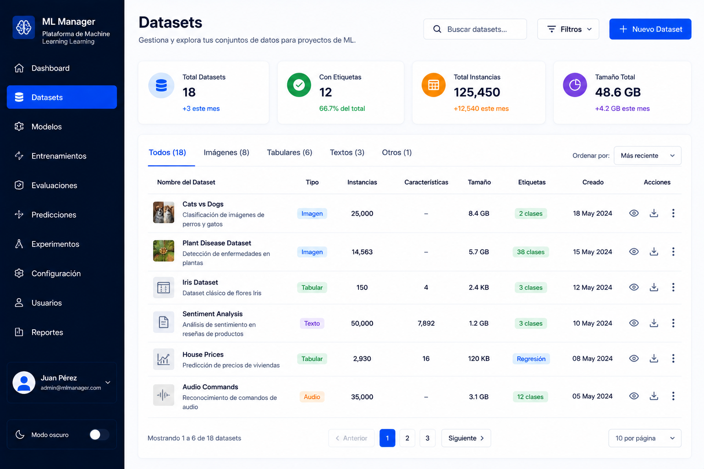
Análisis y procesamiento de datos con modelos para clasificación y predicción usando datasets reales.
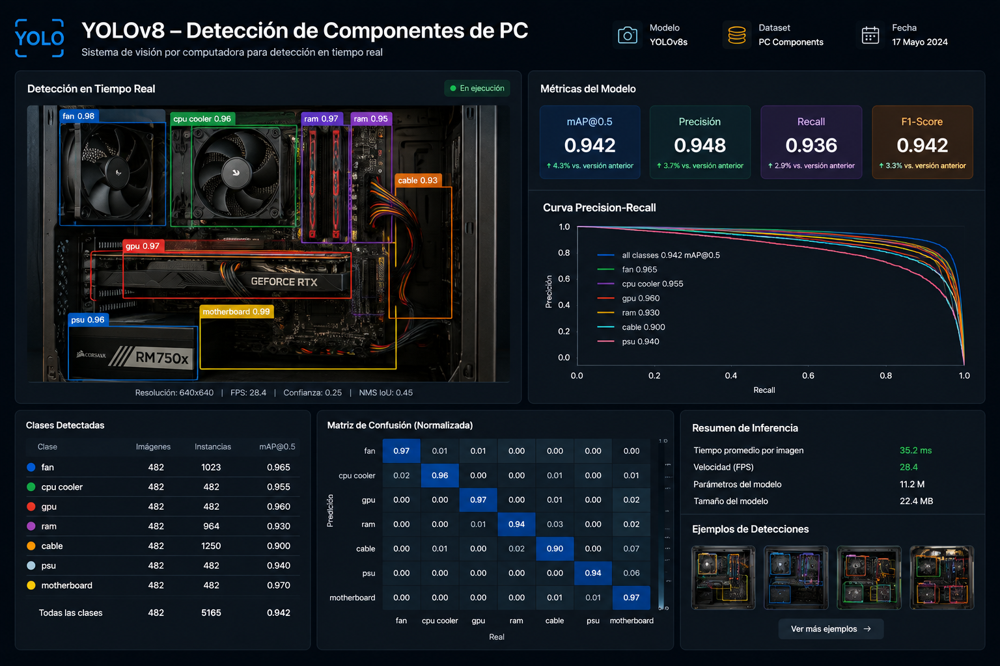
Exploración de visión por computadora con una captura real del proyecto.
Tienda virtual con usuarios, catálogo, carrito de compras e integración de pagos.
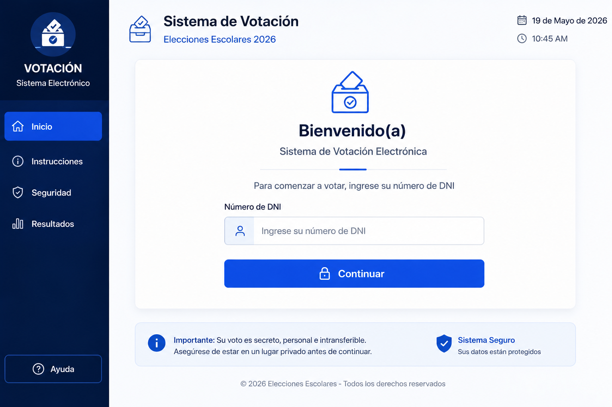
Proyecto con pantallas de inicio, elección y resultado.
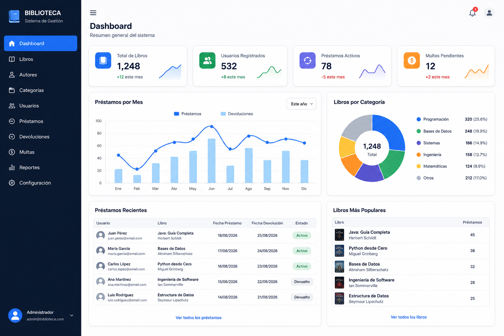
Aplicación de escritorio para registrar, buscar, modificar y eliminar libros, autores y disponibilidad.
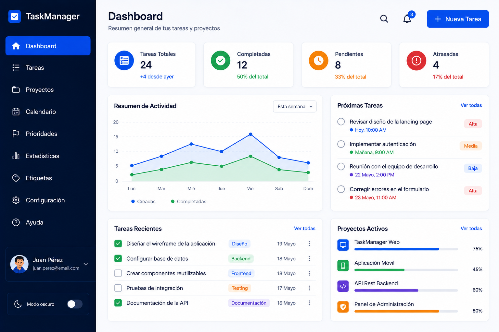
Interfaz real de gestión de tareas con dashboard, listado y formulario.
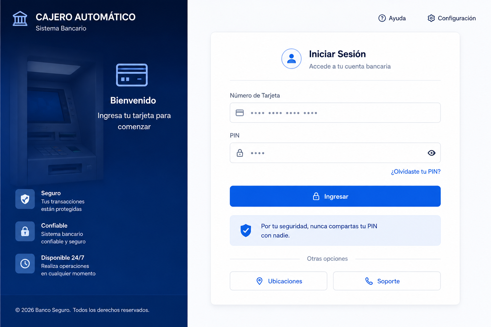
Simulador con operaciones de depósito, retiro y consulta de saldo, con validación e interfaz gráfica.
Gestión de clientes, préstamos y pagos conectada a bases de datos empresariales mediante JDBC.
Ver en GitHub05 / IA Y DATOS
Ingeniería, datos y resultados visuales en una selección de capturas reales.
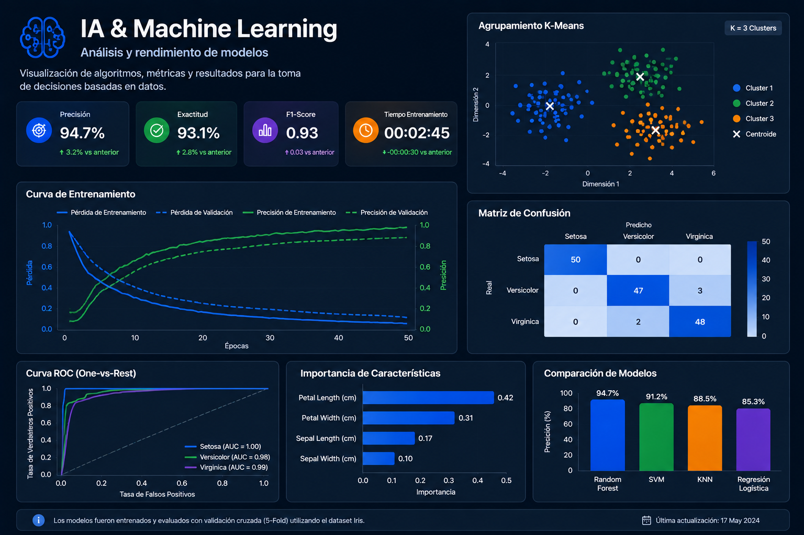
Un espacio para observar el flujo de análisis y los gráficos del trabajo con datos.
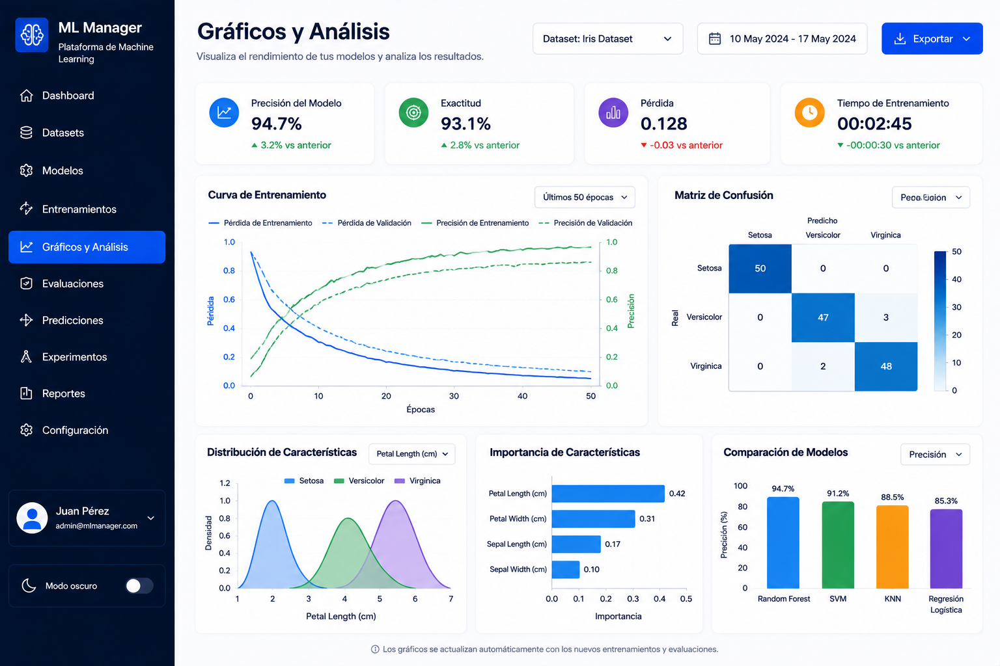
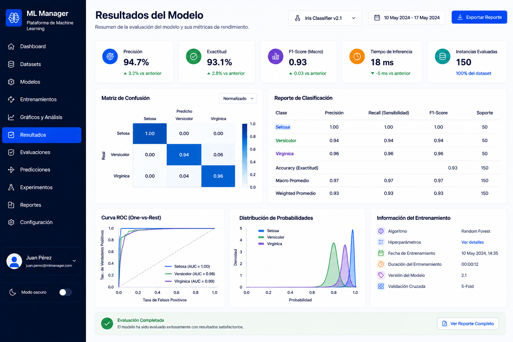
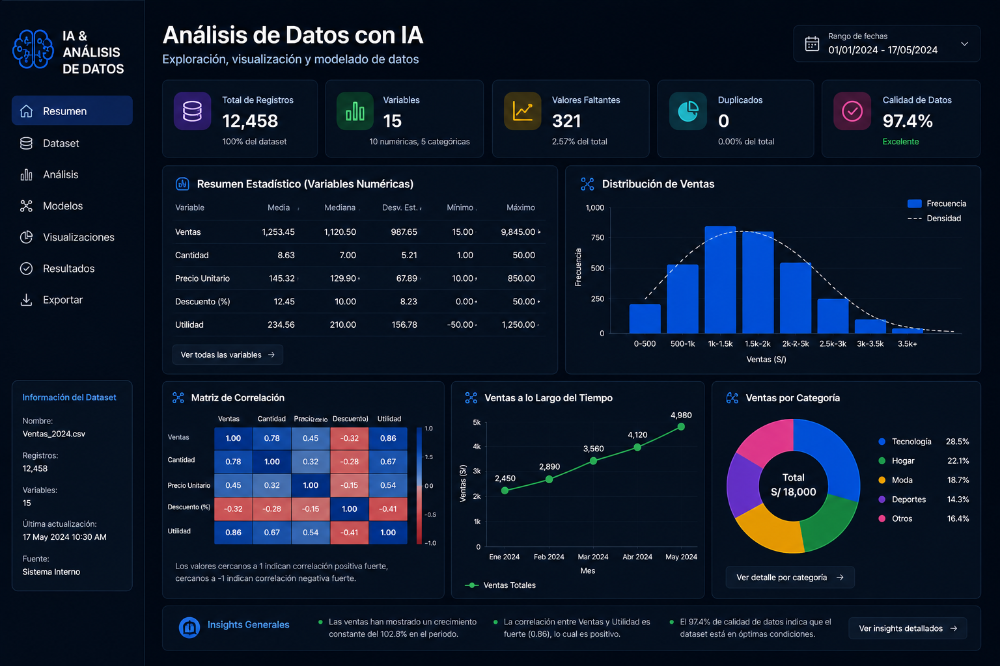
06 / EXPERIENCIA
Desarrollo web aplicado a una necesidad institucional real.
I.E. Ramón Castilla · Cajamarca
Desarrollo de un sistema web de inventario y gestión interna en PHP, con módulos por rol, autenticación, recuperación de cuenta y exportación de datos.
07 / FORMACIÓN
La base académica desde la que desarrollo proyectos de software e inteligencia artificial.
SENATI · Cajamarca, Perú · 6to ciclo
Formación en desarrollo de software, bases de datos, metodologías ágiles, inteligencia artificial y machine learning mediante proyectos académicos.
08 / CERTIFICACIONES
Certificaciones reales obtenidas en Cisco Networking Academy.
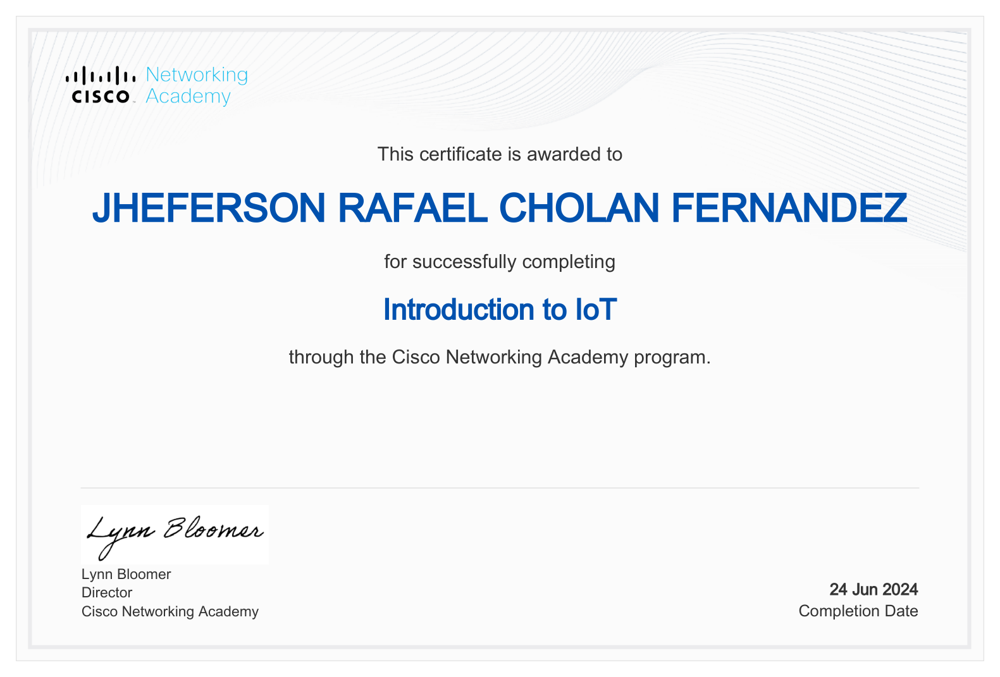
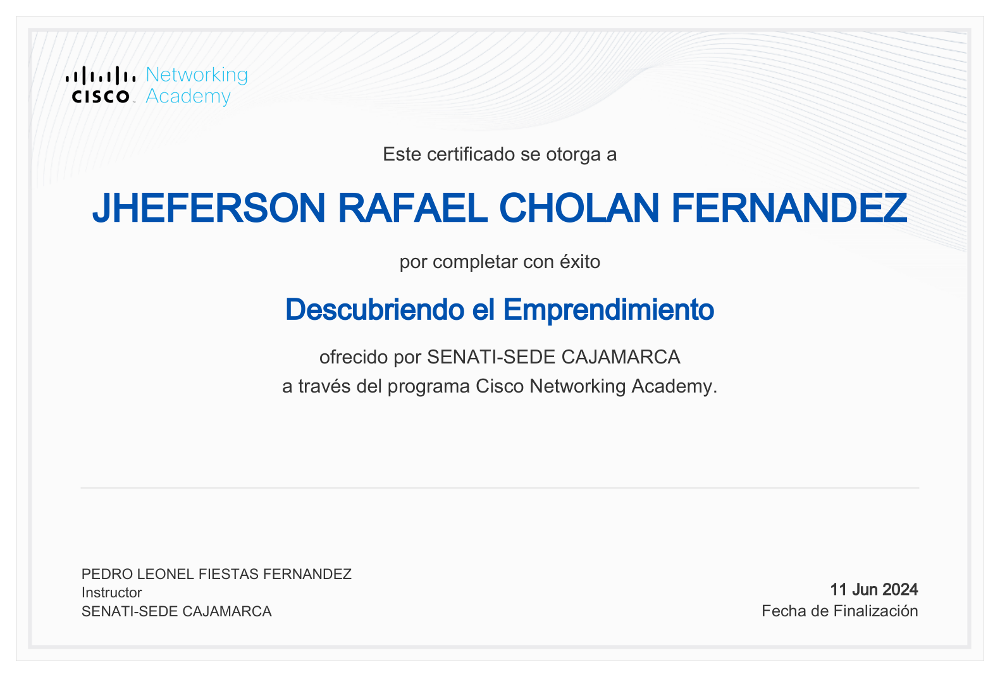
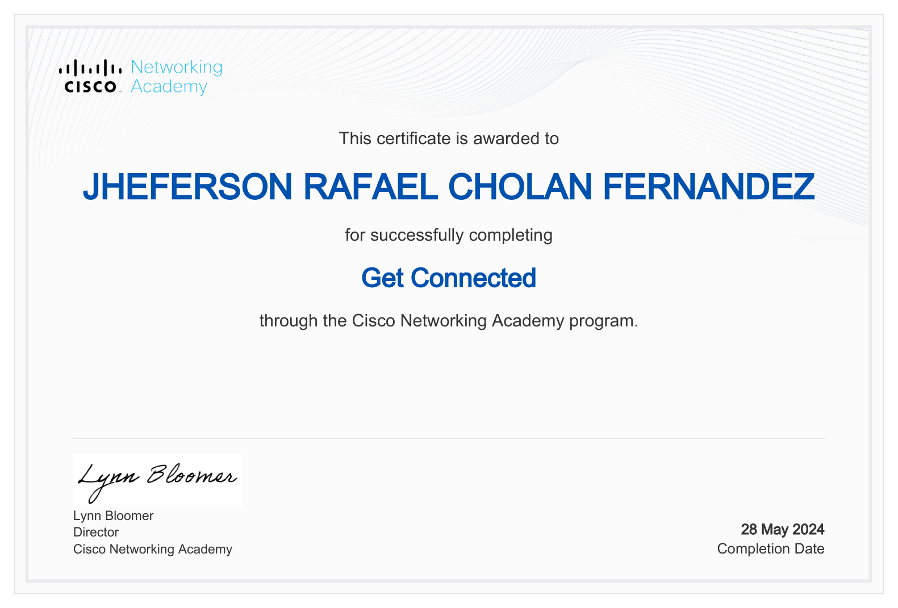
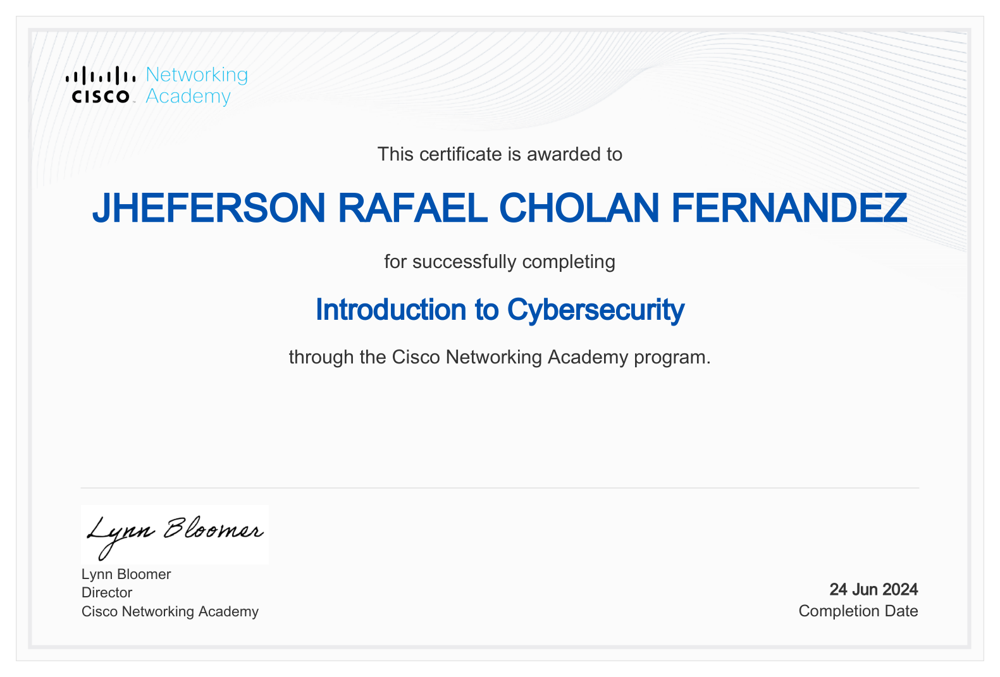
09 / CONTACTO
Estoy interesado en oportunidades, proyectos tecnológicos y colaboración en desarrollo de software e inteligencia artificial.